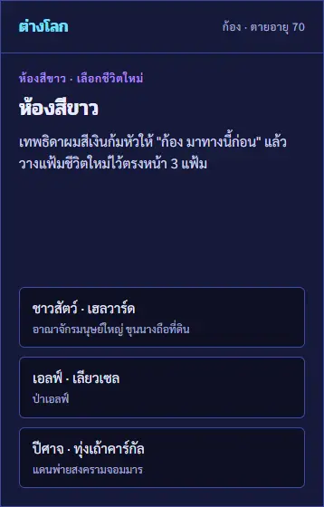
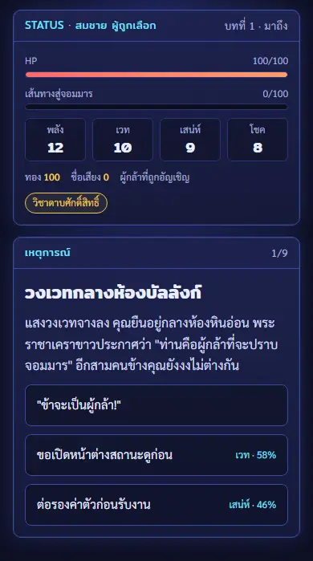

เล่นได้แล้วต่างโลกอยู่ในเกมหลักแล้ว ไปได้จากปรโลกหรือการ์ดชวนระหว่างชีวิต (ดูทางเข้าด้านล่าง)
กำลังทำระบบเต็มของต่างโลกยังทยอยเข้าเกม ลำดับและรายละเอียดอาจเปลี่ยนได้
เล่นเกม →เล่นได้แล้วชาติต่างโลก
- เริ่มจากชีวิตเดิมที่จบลง เทพธิดาต่างโลกพาไปห้องขาว แล้วยื่นแฟ้มเกิด 3 ใบให้เลือก
- แฟ้มเกิดแต่ละใบบอกเผ่ากับแคว้นที่จะไปเกิดในทวีปเอเธอร์การ์ด มี 20 แคว้น 8 เผ่า เช่น มนุษย์ในอาณาจักรเฮลวาร์ด เอลฟ์ในป่าเลียวเซล คนแคระในนครใต้ภูกรอมดาล · แคว้นใหญ่ได้บ่อย แคว้นห่างไกลหายาก
- แต่ละเผ่าค่าเริ่มต่างกันและแก่ไม่เท่ากัน เอลฟ์กับเชื้อมังกรอายุยืนกว่ามนุษย์หลายเท่า
- รับสกิลโกงจากเทพธิดาหนึ่งอย่าง เช่น ประเมินค่า กล่องมิติ ฝีมือครัวจากโลกเดิม
- ทุ่มเทสายเดียวกันครบ 3 ปีได้อาชีพติดตัว (มี 5 อาชีพ เช่น นักดาบ จอมเวท พ่อค้า) · ตอนจบดูจากชื่อเสียงกับอาชีพที่ได้
- ทุกชาติทวีปสุ่มขั้วอำนาจ (มหาอำนาจ แคว้นขาลง แคว้นมาแรง) ข้อพิพาทใหญ่ และดันเจียนลับไว้ · มีกองการ์ดของตัวเองแล้ว: เรื่องประจำแคว้นที่อยู่ ข้อพิพาทที่กำลังเกิด และขั้วอำนาจที่อยู่ใกล้ (ตอนนี้มีตัวอย่างชนิดละใบ) · ดันเจียนลับยังไม่มีการ์ดพาไป
- ตระกูลที่ข้ามไปกลับระหว่างสองโลกหลายรุ่น โลกเริ่มซ้อนทับกัน · ในชาติไทยได้ยินข่าวลือแปลก ๆ ที่มีแต่ตัวเองได้ยิน · ในต่างโลกมีคนจำหน้าได้ว่าเหมือน "ผู้มาจากอีกฟาก"
- เล่นเป็นการ์ดทีละใบ ตายแล้วกลับไปให้ปรโลกเดิมตัดสิน
- เซฟที่เริ่มชาติต่างโลกก่อนมีทวีป ยังเล่นบทบาทเดิมจาก 4 โลกต่อได้จนจบชาติ


เล่นได้แล้วทางเข้าจากเกมหลัก
ชีวิตไทยไปต่างโลกได้ 2 ทาง แล้วเล่นชาติต่างโลกต่อ
ทางที่ 3 บนการ์ดทางเกิดที่ปรโลก
- หลังตาย การ์ดทางเกิดที่ปรโลกมีทางที่ 3 ให้ตามเทพธิดาต่างโลกไปเกิดในโลกแฟนตาซีเสมอ
- บางรอบเทพธิดามายืนรอเองข้างทาง ชาตินั้นได้แฟ้มเกิดเพิ่มอีกใบ และเธอฝากคำสัญญาไว้ 1 ข้อ (มีทั้งหมด 2 แบบ)
- ทำบุญมากเทพธิดามารอบ่อยขึ้น บาปมากมาน้อยลง แต่ยังมีโอกาสอยู่เสมอ
- การ์ดจบชาติต่างโลกบอกว่ารักษาคำสัญญาได้หรือผิด ส่วนบุญบาปของคำสัญญาไปเฉลยที่ปรโลก
การ์ดชวนระหว่างชีวิต
- ทุกชีวิตเจอการ์ดชวน 1 ใบช่วงอายุ 13–18 · ช่วงอายุ 25–45 และ 50–75 มีโอกาสเจออีกช่วงละ 50% · ชีวิตหนึ่งเจอได้ไม่เกิน 3 ใบ
- เรื่องชวนมี 7 แบบ เช่น วงเวทใต้เท้า ประตูในฝัน ช่วยเด็กกลางถนน และรถบรรทุกที่เล่าเป็นมุก
- ปฏิเสธได้ทุกใบ ชีวิตเดินต่อตามเดิม · กดรับแล้วจอถามยืนยันอีกครั้ง เพราะย้อนกลับมาเลือกใหม่ไม่ได้ · การ์ดไม่บอกล่วงหน้าว่ารับแล้วจะเป็นอย่างไร
- 3 แบบเป็นการหายตัวไปทั้งตัว ไม่ใช่ตาย บางครั้งได้กลับมาเล่นชีวิตเดิมต่อ · ไม่ได้กลับ = ป้ายท้ายชีวิตเขียนว่าหายตัวไปตอนอายุเท่าไร ไม่มีงานศพ คนที่บ้านออกตามหาแทน
- ชีวิตที่รับการ์ดชวน เทพธิดามารอแน่นอน และให้โชคแถม +10 ตอนเกิดในต่างโลก
- เทพธิดายื่นแฟ้มเกิดให้เลือก กรรมไม่ทำให้แฟ้มเอียง · คนที่หายตัวข้ามไปทั้งตัวไม่ได้เลือกแฟ้ม ไปโผล่เป็นมนุษย์ในแคว้นสุ่ม · แล้วเลือกสกิลโกง 1 แผ่นจากที่เทพธิดายื่น
- สกิลข้ามชาติ: ตอนจบชาติต่างโลกและที่ปรโลกหลังชีวิตไทย เลือกสกิล 1 อย่างลงสมุดสกิล (มี 11 อย่าง) · ได้ซ้ำ = ขั้นในสมุดขึ้น สูงสุดขั้น 3 · ก่อนไปเกิดเลือกพกจากสมุดได้ 3 อย่าง ใช้ทั้งชีวิตไทยและชาติต่างโลกที่ตามมา · ของที่พกเริ่มขั้น 1 แล้วฝึกด้วยการ์ดฝึกสกิล ถึงขั้นในสมุดได้เร็วกว่าครั้งแรก · สกิลที่ไม่ได้พกยังอยู่ในสมุด
- ค่าสถานะชุดของต่างโลก: HP · พลัง · เวท · บารมี · โชค
- ค่าตั้งต้นติดมาจากชาติไทยด้วย: สุขภาพเป็นพลัง ความรู้เป็นเวท ความสัมพันธ์เป็นบารมี ความสุขเป็นโชค คอนเน็คชั่นเป็นชื่อเสียง ทรัพย์สินเป็นทอง ยิ่งอยู่โลกเดิมนานยิ่งติดตัวไปมาก เต็มที่ตอนอายุ 40 · ตายตอนสุขภาพแย่ HP เริ่มต่ำลง แต่หักไม่เกิน 30
- แนวเล่นต่างจากชาติไทยชัด: ส่วนใหญ่กดผ่านทีละตาโดยไม่ต้องตัดสิน ตั้งโฟกัสได้ทุกเมื่อในแผงตัวฉัน (ทางเลือกเปลี่ยนตามช่วงวัย โฟกัสที่ไม่เหมาะกับวัยใหม่กลับเป็นตามน้ำ) แล้วมีจดหมายเหตุบันทึกเรื่องที่เกิด
- ความรู้จากโลกเดิม 9 หมวด (อาหาร เกษตร แพทย์ การค้า ช่าง การพิมพ์ ทหาร การเมือง บันเทิง) เปิดทางลัดได้ ใช้แล้วล้มเหลวได้
- ชื่อเสียงเป็นอีกแกนหนึ่ง โลกจำเป็นตำนาน ดังทางร้ายก็ถูกจำเป็นคนร้าย
- บัญชีบุญบาปเป็นบัญชีเดียวของดวงวิญญาณ ไปต่างโลกก็พกกรรมไปด้วยแบบเดียวกับเกิดใหม่ ต่างโลกจึงไม่ใช่ทางล้างบาป · บัญชียังซ่อนและเฉลยที่ปรโลกที่เดียวเหมือนเดิม
- ตายในต่างโลกแล้วกลับมาปรโลกเดิม ปรโลกตัดสินจากชาติต่างโลก แล้วการ์ดทางเกิดให้เลือกกลับโลกเดิมตามกรรม หรืออยู่ต่างโลกต่อ (อยู่ติดกันได้จำนวนชาติจำกัด)
กติกาต่างโลกทั้งหมด
- อยู่ในวงหลักของเกม ไม่ได้เป็นโหมดแยก (ต้นแบบเกมสั้น isekai.html ลบแล้ว)
- ทางเข้า: (1) ทางที่ 3 บนการ์ดเลือกทางในปรโลก · (2) เทพธิดามาเอง โอกาสขึ้นกับกรรม (บุญเต็ม 40% · กลาง ๆ 20% · บาปเต็ม 5%) · (3) การ์ดชวนระหว่างมีชีวิต 7 แบบ ช่วงอายุ 13–18 แน่นอน และ 25–45 และ 50–75 ช่วงละ 50% ไม่เกิน 3 ครั้ง ปฏิเสธได้ทุกครั้ง · 3 แบบทำให้ "หายตัว" · (4) ประตูไปแล้วกลับได้ อยู่ที่นั่น 3–12 ปีแล้วกลับมาพร้อมของ
- คำสัตย์ต่อเทพธิดา 2 แบบ (ไม่ฆ่า · ช่วยคน) · รักษาได้บุญ ผิดคำติดตัวถาวร · ถูกชวนแล้วตอบรับได้โชค +10
- ในต่างโลก: ห้องขาวเลือกแฟ้มเกิด 1 ใน 3 ใบ แต่ละใบบอกเผ่ากับแคว้นที่จะไปเกิดในทวีปเอเธอร์การ์ด (20 แคว้น 8 เผ่า เช่น มนุษย์ เอลฟ์ คนแคระ) → เลือกสกิลโกง 1 ใน 3 จาก 11 สกิล → เวลาเดินเองปีละ tick (แก่แล้ว 5 ปี) ผู้เล่นเลือกว่าจะทุ่มให้อะไร → การ์ดต่างโลก 106 ใบ → ตอนจบ: ชาติทวีปดูจากชื่อเสียง (ถึง 30) กับอาชีพที่ได้ (ทุ่มสายเดียวครบ 3 ปี) ได้ทั้งคู่ = ดีที่สุด · อย่างใดอย่างหนึ่ง = ดี · ไม่ได้เลย = แย่ · ชาติบทบาทจาก 4 โลกเดิม (เซฟเก่า) ยังจบตามเป้าหมายและชื่อเสียงของบทบาท ดีที่สุด/ดี/แย่ · ทั้งสองแบบตายก่อนได้
- ค่าสถานะ HP พลัง เวท บารมี โชค + ทอง ชื่อเสียง เกจเป้าหมาย · บนจอขึ้นแค่ ชีวิต (= HP) · พลัง · เวท · โชค และบรรทัดทอง/ชื่อเสียง · บารมีกับเกจเป้าหมายยังคิดอยู่แต่ไม่ขึ้นจอ · ค่าเริ่มเชื่อมกับค่าชีวิตไทย (สุขภาพ→พลัง · ความรู้→เวท · ความสัมพันธ์→บารมี · ความสุข→โชค · คอนเน็คชั่น→ชื่อเสียง) · เช็ก 50 + (ค่า − ความยาก) × 4 ในกรอบ 5–95 · บาปเพิ่มความยากได้ถึง 4
- ย้ายแคว้น (ชาติทวีป): ตั้งโฟกัสสำรวจดินแดนครบ 2 ปีเต็มนับจากเกิดหรือย้ายครั้งก่อน ได้การ์ดทางแยก เลือกย้ายไปแคว้นที่มีถนนติดกัน (สุ่มไม่เกิน 3 แคว้น) หรืออยู่ที่เดิม · อยู่ที่เดิมตัวนับเริ่มใหม่ · ชาติบทบาทจาก 4 โลกเดิมไม่มีการ์ดนี้
- สุ่มต่อชาติทวีป: มหาอำนาจ 1 · ขาลง 1–2 · มาแรง 1–2 จากแคว้นที่มีผู้ปกครอง (ไม่ซ้ำกัน) + ข้อพิพาทหลัก 1 ใน 8 · ดันเจียนลับ 3–4 จุด (ยังไม่มีการ์ดพาไป)
- กองการ์ดทวีป (ชาติทวีปเท่านั้น · การ์ดหนึ่งใบอยู่กองเดียว): ประจำแคว้น ขึ้นเมื่ออยู่แคว้นนั้น (น้ำหนัก 2) · ข้อพิพาท ขึ้นเมื่อตรงข้อพิพาทของชาติ (2) · ขั้วอำนาจ ขึ้นเมื่ออยู่ในหรือติดแคว้นมหาอำนาจ/ขาลง/มาแรง (1) · ชื่อแคว้นและขั้วอำนาจในข้อความเปลี่ยนตามชาติที่เล่น · ต่อท้ายกองการ์ดทุกโลกเดิม · ตอนนี้มีการ์ดตัวอย่างกองละ 1 ใบ · ชาติบทบาทเดิมไม่เห็นกองนี้
- ไปต่างโลกทั้งตัวพกบุญบาปไปครบไม่หัก (ประตูนับเป็นไปทั้งตัว) · การ์ดเสียงเรียกไม่บอกผลล่วงหน้า รู้จากเรื่องหลังตอบรับ
- บัญชีกรรมเป็นของวิญญาณเดียวกันทั้งสองโลก · อยู่ต่างโลกติดกันได้ 4 ชาติ · กลับมาแล้วเลือกเป็นลูกหลานไม่ได้
- ค่าซ้อนทับของตระกูล: +1 ทุกครั้งที่ตระกูลกลับเข้าโลกที่เคยออกมาแล้ว (เกิดกลับไทยหลังชาติต่างโลก · ทริปที่กลับบ้านได้ · กลับเข้าต่างโลกอีกหลังเคยออก) · ทริปที่หลงไม่กลับ เกิดไทยต่อไทย และช่วงปรโลกไม่นับ · ตกทอดถึงทายาทแบบบัญชีกรรม ตระกูลใหม่เริ่ม 0 · ค่าเป็นขั้น 0–4 ตอนนี้เปิดขั้น 1 (ค่า 1) ขั้น 2–4 ยังไม่ตั้งเกณฑ์ · การ์ดขั้นซ้อนทับไม่อยู่ในกองสุ่ม เกมนัดให้ต่อชีวิตตามขั้น (1 · 1–2 · 2–4 ใบ อายุ 15–60) · ขั้น 1 ในชาติไทย = ข่าวลือที่มีแต่ตัวเราได้ยิน · ในต่างโลก = การ์ด "หน้าคุ้น" (ขั้น 1–4 อ่านค่าตอนข้าม) · ตระกูลที่ไม่เคยข้ามโลกไม่เจอการ์ดชุดนี้
- ลงโค้ดแล้วแต่ยังไปไม่ถึง (รอเกณฑ์ขั้น 3): สายอาชีพนักล่า 4 ขั้น เข้าได้ทางการ์ดรับสมัครทางเดียว · ดันเจียนในไทย 4 ประตู การ์ดทางเข้า → กลางทาง (ถอยได้) → ห้องบอส นับเป็นโควตาใบเดียว คนนอกสายถูกดึงเข้าแล้วรอดเสมอ นักล่าตายในห้องบอสได้ · ของติดตัว 3 ช่อง (เครื่องราง อาวุธ ชุด) + ย่าม 3 ชิ้น ได้จากดันเจียนตามลำดับ ไม่สุ่ม เต็มแล้วขายทิ้งเอง · แผงตัวฉันโชว์ของติดตัวเมื่อถึงขั้น 3 หรือมีของ
กำลังทำต่างโลกในเกมหลัก
ระบบที่เจ้าของเกมตัดสินแล้ว แต่ยังไม่เข้าเกม
เกิดในต่างโลก
- ดูค่าสถานะของคนอื่นได้เมื่อมีสกิลประเมินค่า
ชีวิตในต่างโลก
- กิลด์นักผจญภัย ไต่แรงค์จาก F ถึง S · บอร์ดเควสให้เลือก เควสบังคับตอนเมืองมีภัย และเควสที่โผล่เอง
- ทุกอย่างที่ทำได้ EXP เลเวลขึ้นได้แต้มไปเรียนสกิล · สกิลมาได้จากการฝึกซ้ำ แต้มเลเวล และสกิลต้องสาปจากกรรม
- ไอเทม 4 ช่อง มีของแฟนตาซีปนของคติไทย เช่น ตะกรุด พระเครื่อง มงคล ยาหม่อง
- ความรู้อันตรายอย่างดินปืนเล่าเป็นผลโดยไม่มีสูตร
- ชื่อเสียงเปลี่ยนราคาในร้าน
- โลกผสมทุกยุค 8 ภูมิภาคขึ้นไป รวมภูมิภาคแบบอยุธยาหนึ่งแห่ง
บุญบาปและการกลับบ้าน
บุญต่างโลก
ช่วยผู้อ่อนแอ · ให้ทาน · รักษาสัญญา · สู้ปกป้อง
ช่วยผู้อ่อนแอ · ให้ทาน · รักษาสัญญา · สู้ปกป้อง
บาปต่างโลก
ฆ่าเกินเหตุ · เอาเปรียบด้วยสกิลโกง · ความรู้อันตราย · ทรยศ
ฆ่าเกินเหตุ · เอาเปรียบด้วยสกิลโกง · ความรู้อันตราย · ทรยศ
- ฆ่ามอนสเตอร์ดูที่เจตนา ปกป้องเมืองได้บุญเล็ก ล่าเก็บแต้มหรือล่าเผ่าที่ไม่ได้ทำร้ายใครเป็นบาป
- อยู่ต่อ: เลือกทายาทจาก 3 คนที่ลักษณะสุ่ม แล้วส่งไอเทมต่อได้ 1 ชิ้น · โลกจำชาติก่อนตรงตามจริง
- กลับโลกเดิมได้ 4 อย่าง: กรรมกับแถวในผังตระกูล · ของที่ระลึก 1 ชิ้นเป็นของตระกูล · ทองแปลงเป็นเงินตั้งต้นส่วนเล็ก ๆ · ตำนานที่ครอบครัวเล่าต่อ
- เงินต่างโลกเป็นเหรียญทองแดง เงิน ทอง เรียกชื่อแบบไทยโบราณ
นอกคัมภีร์ที่มาของต่างโลก
- ต่างโลกทั้งหมดเป็นของเกม ไม่ได้มาจากคติไทยหรือไตรภูมิ ได้แรงบันดาลใจจากแนวเรื่องเกิดใหม่ในต่างโลกของนิยายและการ์ตูนญี่ปุ่น
- ไม่มีข้อมูลจริงในต่างโลก ไม่มีตารางชีพ เงินเฟ้อ หรือเหตุการณ์บ้านเมือง
- กำลังทำต่างโลกในเกมหลักจะไม่มีเรื่องทาส การใส่ร้ายทางเพศ หรือฮาเร็ม ฉากตลาดในเกมสั้นจะเปลี่ยนตอนย้ายเข้าเกมหลัก